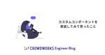

クラウドワークス エンジニアブログ
https://engineer.crowdworks.jp/
日本最大級のクラウドソーシング「クラウドワークス」の開発の裏側をお届けするエンジニアブログ
フィード
AIが工数データを要約する「AI分析サマリレポート」をリリースしました
クラウドワークス エンジニアブログ
はじめに こんにちは、工数管理SaaS「クラウドログ」でエンジニアをしている越阪部です。 普段の業務では、Webフロントエンドを中心とした開発を担っています。 この記事では、クラウドログに蓄積された工数データを、生成AIが自然言語で要約してくれる「AI分析サマリレポート」の概要や開発裏話を紹介したいと思います。 AI分析サマリレポートとは この機能は、「工数レポート」という工数データを集計・分析するためのページに組み込まれています。 工数レポートページ 工数レポートは、クラウドログに蓄積された工数データをさまざまな切り口で集計して、結果をグラフやテーブル形式で表示することで分析を助けてくれる便…
1日前

カスタムコンポーネントを実装してみて思ったこと
クラウドワークス エンジニアブログ
この記事を書いているひと CrowdWorks.jp デザイン基盤チームでデザイナーをやらせていただいている id:ksmxxxxxx です。 普段は CrowdWorks.jp のデザインシステム構築における、UI デザインと Vue コンポーネント作成をメインに活動しています。 今回は「デザインに軸足を置きながら、Vue コンポーネントを作っているデザイナーがデザインとフロントエンドの狭間で右脳と左脳を殴り合わせながらカスタムコンポーネントを実装した」ポエムをお送りします。 あくまで個人の感想であり他にも解釈はありますが、ひとりのデザイナーの中でデザインする自分とコーディングする自分が河原…
14日前

自社の開発組織の強みを定義する
クラウドワークス エンジニアブログ
ようやく涼しくなってきましたね。もう少し漸進的に気温が下がってほしい。プロダクト開発部部長の塚本@hihats です。 前置き この二、三年くらいは個人的にシステム思考への傾倒があり、以前ここに書いた変化に適応するソフトウェアアーキテクチャと組織構造への道程も、Qiitaに書いたソシオテクニカルアーキテクチャ概要もその系譜の記事だった。今回は、エレガントパズルという書籍を読んでいて、そこかしこにドネラ・メドウズ公の話が出てくるので改めて私もシステム思考について記事を書こうと考えていた。 そんな折、他社のCTOと話す機会があってそこで「自社の開発組織や開発力にそこまで特別さを感じていないんですよ…
17日前
Prismaでデータ移行した話
クラウドワークス エンジニアブログ
こんにちは、 @ttaka_66 です。 CROWDWORKSコンサルティングの業務効率化を目的とした自社システムを開発しています。自社システムではO/RマッパーにPrismaを利用しています。今回はスキーマ変更を伴うデータ移行を行ったので、それについて記載します。
2ヶ月前
Aurora MySQLとRedshiftのゼロETL統合が本番導入出来るか検証しました
クラウドワークス エンジニアブログ
Aurora MySQL Zero ETL Integrations クラウドワークスのSREチームに所属しています@ciloholicです。 2023年11月にAurora MySQLとRedshiftのゼロETL統合がGAされました。この度、ゼロETL統合が本番導入可能かを検証する機会があったので、その検証結果を記載します。 aws.amazon.com 2024年7月時点での検証結果ですので、時間経過によって内容が変わっている可能性があります。その点は十分ご注意ください。 背景 まず、ゼロETL統合の検証しようと考えた背景について軽く説明したいと思います。クラウドワークスでは、MySQL…
3ヶ月前
フロントエンド開発チュートリアルを作成し開発ハードルを下げた話
クラウドワークス エンジニアブログ
crowdworks.jpの開発現場で新しくフロントエンド開発を行う方がスムーズに業務に入れる、作業のハードルを下げるために、フロントエンド開発の知識習得のためのチュートリアルを作成した話です。
3ヶ月前
Elasticsearch RailsからSearchkickへの移行で気づいたSearchkickの注意点
クラウドワークス エンジニアブログ
こんにちは、クラウドソーシングサービス「クラウドワークス」でエンジニアをしている神山です。クライアントとワーカーのマッチングに関わる機能の運用・改善を行うデリバードチームに所属しています。 本サービスではRails環境での検索エンジン運用に Elasticsearch Rails を使用してますが、この度 Searchkick への移行を決定し、現在移行作業中です。この移行作業を通じて、Elasticsearch RailsとSearchkickの間にはいくつか顕著な違いがあり、特にElasticsearch Railsからの移行に際して注意が必要な点がいくつか存在しました。今回はその点を中心…
4ヶ月前
パフォーマンス改善：効率的なCSVインポートでSQL発行回数を大幅削減
クラウドワークス エンジニアブログ
はじめに はじめまして、クラウドログのバックエンド開発を担当している崎岡と申します。 [クラウドログ]は、プロジェクト管理や工数管理を効率化するためのSaaS、作業時間の入力や進捗の可視化を簡単に行える機能が特徴です。そのプロダクトの機能改善について今回はお話ししようと思います。
4ヶ月前
サービスのヘッダーリプレイスがたいへんだった話
クラウドワークス エンジニアブログ
こんにちは、 @t0yohei です。 先日、crowdworks.jpで使用されているヘッダーのリプレイスを行いました。 ヘッダーのデザインを改善し、より使いやすくなりました！ – クラウドワークス お知らせブログ このリプレイスでは、ユーザビリティやアクセシビリティの向上を目指すと同時に、技術的負債の解消や新しい画面レイアウトの下準備といった意図もありました。 このブログでは、今回のヘッダーリプレイスで直面した課題やポイントを共有したいと思います。 ヘッダーの改修や多くの画面に適用されているUIパーツのリプレイスに取り組む方にとって参考になれば嬉しいです。
5ヶ月前
TSKaigi 2024参加レポート
クラウドワークス エンジニアブログ
皆様こんにちは。クラウドソーシングサービス「クラウドワークス」にてエンジニアをしております@okuto_oyamaです。今回は、5月11日に開催されたTSKaigi 2024に参加してきたのでその参加レポートをお届けします。
5ヶ月前
RubyKaigi 2024 のブースコンテンツ用に ruby.wasm を使用したクイズアプリを作成しました
クラウドワークス エンジニアブログ
こんにちは、 @t0yohei です。 ruby.wasm は、Ruby のコードを Wasm に変換しブラウザー上で実行できるようにする技術です。 今回は、この ruby.wasm を使用してちょっとした web アプリを作成したので、そのことについて記載してみようと思います。 ※ この記事は、RubyKaigi 2024 のクラウドワークス社ブースにて展示するクイズアプリの解説記事です。 目次 目次 作ったもの クイズアプリの解説 大まかな仕組み 使わせてもらったライブラリ i18n 対応 問題について デプロイ先 難しかったこと タイマーの部分の実装 Ruby のコード規約、JavaSc…
5ヶ月前
RubyKaigi2024 にてプラチナスポンサーとして協賛・ブース出展します
クラウドワークス エンジニアブログ
株式会社クラウドワークスは2024年5月15日から沖縄県那覇市にて開催される、プログラミング言語 Ruby の世界最大級国際カンファレンス「RubyKaigi 2024」にて、プラチナスポンサーとして協賛・ブース出展します。 Rubyとクラウドワークス crowdworks.jp では創業時よりWebアプリケーション開発のフレームワークとしてRuby on Rails を使用し、その他周辺ツールの開発にもRubyのエコシステムを多分に活用しております。Rubyによって収益化できていると言っても過言ではなく、2018年以降継続的にRubyKaigiのスポンサーをしています。 また、クラウドテック…
5ヶ月前
フロントエンド課題を解決するべく、アッセンブルしてみた
クラウドワークス エンジニアブログ
クラウドログのフロントエンド開発を担当している牛嶋と申します。 今回はクラウドログのフロントエンドメンバーが参加して行う「フロントエンドアッセンブル」とその取り組みを紹介させていただきます。 フロントエンドアッセンブルについて フロントエンドアッセンブルは、フロントエンドにおける開発課題を解決するためのチームです。 アッセンブルで挙げられる課題は様々ですが、日々の開発におけるフロントエンドを中心とした課題や技術的負債の解消を目的に行っています。 先日、「SaaSUI の割れ窓リストを作ってみた話」が投稿されました。こちらは UI/UX を中心とした課題が割れ窓リストにまとめられています。 それ…
5ヶ月前
クラウドワークスでのエンジニアリングマネージャーとしての歩み
クラウドワークス エンジニアブログ
クラウドワークスのテクノロジーエクセレンスグループSREチームでマネージャーをしているbayashi_okです。 今回はエンジニアリングマネージャーになってからやってきた取り組みを一部紹介しようと思います。 まず少し自己紹介をすると、前職では同じく事業会社でSREをしており、チームの立ち上げから行い、マネージャーとして各サービスのインフラ整備や自動化などを行ってきました。 現職への入社は約４年前で入社時は再びSREチームメンバーとして業務を行ってきました。 そして１年半前に再びマネージャーに戻ることとなりました。 現在はテクノロジーエクセレンスグループというグループで crowdworks.j…
6ヶ月前
UX検定基礎（HCD検®認定）を受験しました
クラウドワークス エンジニアブログ
はじめに こんにちは。 crowdworks.jpでワーカー向けの施策・機能開発を行うデリバードチームでエンジニアをしている駒井です。 先日、第6回「UX検定基礎（HCD検®認定）」を受験してきました。 この記事ではUX検定に取り組んだ経験についてお話しします。 はじめに UX検定基礎とは 受験のきっかけ 学習方法 学習推奨図書 アフターデジタル2 UXと自由 UXグロースモデル アフターデジタルを生き抜く実践方法論 人間中心設計入門（HCDライブラリー第０巻） ユーザビリティエンジニアリング: ユーザエクスペリエンスのための調査、設計、評価手法 出題範囲（シラバス）の重要ワード その他 受験…
6ヶ月前
husky(ハスキー)を導入して開発チームの生産性を改善した話
クラウドワークス エンジニアブログ
こんにちは、株式会社クラウドワークスでエンジニアをしている、松尾です。 早いものでエンジニアになって、1.5年です。いや〜〜早い。 時の流れ早すぎ。。 最近、huskyとlint-stagedを用いて、下記の仕組みを作りました ステージングしたファイルに対して、コミット時stylelint, eslintを実行して、エラーの箇所を気づけるようになる 上記の具体的な解説記事というよりかはやってみた結果どうなん？的な記事です。 なぜやった？ huskyで何をした？ 「コミット時に毎回lintが実行されたら、ちょっと待たされるのでは？」という疑問に解答 【ビフォーアフター】husky導入の前後 【ビ…
7ヶ月前
Postmaster Toolsの迷惑メール率をDatadogで監視する
クラウドワークス エンジニアブログ
こんにちは。エンジニアの砂川です。 2023年10月頃にGoogle・Yahoo!から新しいメール送信者ガイドラインが出されました。 該当するメール送信者は、ガイドラインに沿っているか確認をし、沿っていない場合は対応する必要があります。 blog.google support.google.com 対応完了しきった皆様、お疲れ様でした。 絶賛対応中の方々、頑張っていきましょう。 ところで皆さんGmailのPostmaster Toolsの迷惑メール率の監視はいかがでしょうか? クラウドワークスではGmailガイドラインで定めているPostmaster Toolsの迷惑メール率を監視し、閾値を超…
8ヶ月前
UDXチームの立ち上げ〜現在の取り組みを紹介します！
クラウドワークス エンジニアブログ
こんにちは、エンジニアの井上と申します。 2023年6月にクラウドワークスへ入社しました。 私が所属しているのは2023年5月に新しく設立された「UDX」というチームです。 この記事では、UDXチームの立ち上げ〜取り組みまでを紹介したいと思います！
8ヶ月前
良いチームについて考え、新しいチームミッションを決めた話
クラウドワークス エンジニアブログ
crowdworks.jpでエンジニアリングマネージャー兼スクラムマスターをしている久村です。 2021年からエンジニアリングマネージャーをしており、昨年の5月より1つのチームのスクラムマスターをすることになりました。 スクラムマスターは、良いチームに向き合い続けるものだと思います。 良いチームを自分一人で考えることもあれば、チームで考えることもあります。 今回はスクラムマスターとして、チームで良いチームについて考え、その後に新しいチームミッションを決めた内容を記事にしようと思います。
9ヶ月前
開発責任者がやるべきことの気づきと"Think Like a CTO"
クラウドワークス エンジニアブログ
1年をふりかえる 年の瀬ご多端の折、皆様におかれましては本年も大変お世話になりました。crowdworks.jpの開発をしているプロダクト開発部部長の@hihatsです。 本記事はクラウドワークスAdvent Calendar 2023 シリーズ2の25日目の記事です。 今回は、プロダクト開発部として今年取り組んできたことと、その中での気づき、「Think Like a CTO」という書籍の話にも触れていきます。
10ヶ月前
crowdworks.jp のデザインシステム構築活動を振り返る 2023 (実装編)
クラウドワークス エンジニアブログ
この記事はクラウドワークス Advent Calendar 2023 シリーズ 1 の 21 日目及び、デザインシステム Advent Calendar 2023 21 日目の記事です。 こんにちは、crowdworks.jp のデザインシステム構築に携わっているエンジニアの @t0yohei です。 2023 年は crowdworks.jp にとってデザインシステムの実装元年でした。そんな実装元年において、エンジニアとして実施したことを書いてみました。 デザインシステムを実装中の方、これからデザインシステムを実装していこうという方の参考になれば幸いです。 目次 デザインシステムを学ぶ De…
10ヶ月前
インボイス対応を経て感じたPjMとPdMの違い
クラウドワークス エンジニアブログ
この記事はクラウドワークスAdvent Calendar 2023 シリーズ2の19日目の記事です。 こんにちは。crowdworks.jp プロダクトマネジメントチームのチャンタマ（@tmchannel）です。プロダクトマネージャーとしていろんなことをやってます。 世は師走、今年を振り返ってみると、やはり一番に思い浮かぶのはインボイス制度ですね。 なんといっても、誰が何を言おうと、何がなんでもインボイスです。 （とまで書いている段階で、今年の漢字2023が「税」と発表されました。ですよね） 2022年10月頃からインボイス対応の担当として（それはもう、本当に！あちこち）駆け回ってきたなかで、…
10ヶ月前
DMARCレポートを眺めるのにdmarc-visualizerがおすすめ
クラウドワークス エンジニアブログ
DMARCレポートをちょっと眺めたい時に便利なツールがdmarc-visualizerです。
10ヶ月前
ChatGPTでユーザの質問に回答するチャットボットを作ろうとしたけど、導入に失敗しました
クラウドワークス エンジニアブログ
OpenAIのAPIを使用してチャットボットを作りましたが、うまくいかなかったためお蔵入りしました。今回はその供養のため、どのようなことをやったかを書き残そうかと思います。
10ヶ月前
2023年 crowdworks.jp の SRE チームでやったこと
クラウドワークス エンジニアブログ
crowdworks.jp の SRE チームが2023年にやったことを記載していきます。
10ヶ月前
本業、副業、趣味でソフトウェア開発している話
クラウドワークス エンジニアブログ
この記事は クラウドワークス Advent Calendar 2023 シリーズ 1の2日目の記事です。 こんにちは。crowdworks.jp でエンジニアをしている高橋です。 この記事は本業、副業、趣味でソフトウェア開発をしていて感じたことや経験を振り返ったポエムになります。技術的な要素はなく、働き方の話がメインになります。 はじめは、個人のブログや個人利用の文章共有サービスにて書き残そうと思いましたが、フリーランスや副業関連のサービスを提供している側の会社に所属していることもあり、現在の状況について、誰かの参考になればと思い、クラウドワークスのエンジニアブログに書き残すことにしました。
1年前